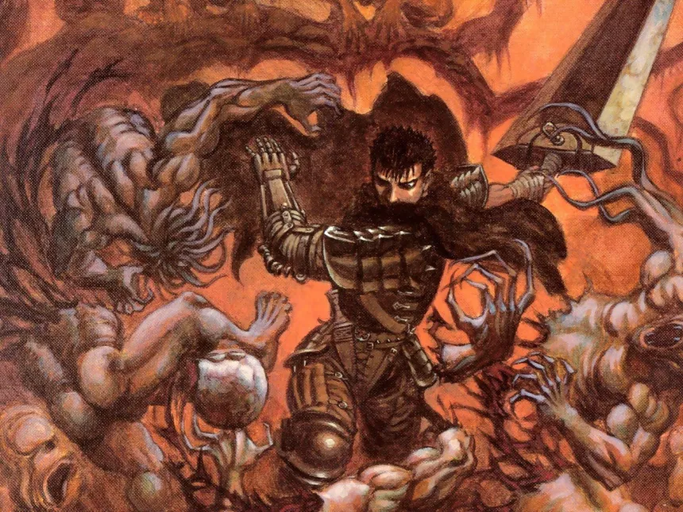
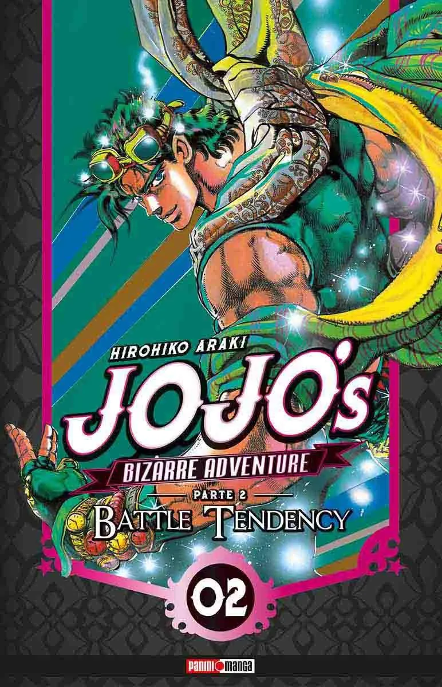

Anime Review

Anime review es una pagina que se dedica ala reseña ademas de la forma de clasificar el contenido japones que mas nos agrada es una plataforma creada exclusivamente para personas amantes del anime, ademas de generar contenido exclusivamente hecho para disfrutar de este bonito


Desde animes mas actuales hasta los animes mas recientes pasando por peliculas de animacion , es un lugar para poder compartir, y disfrutar de este medio
Ademas de ser parte de un catalogo de mas de 200 animes , somos tu mejor alternativa en cuanto a ver anime se refiere